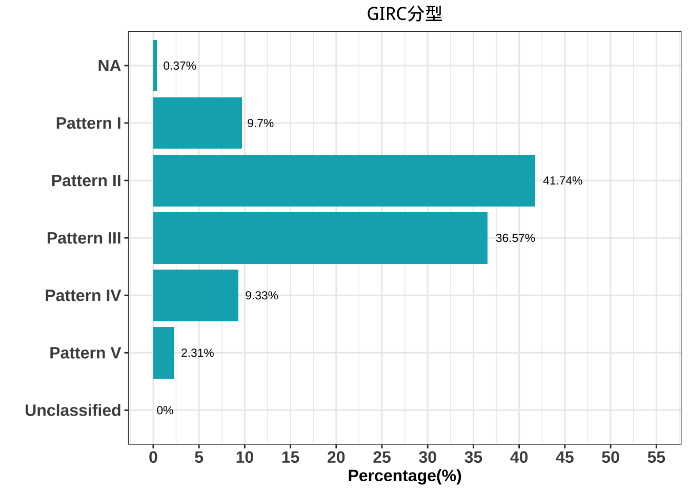
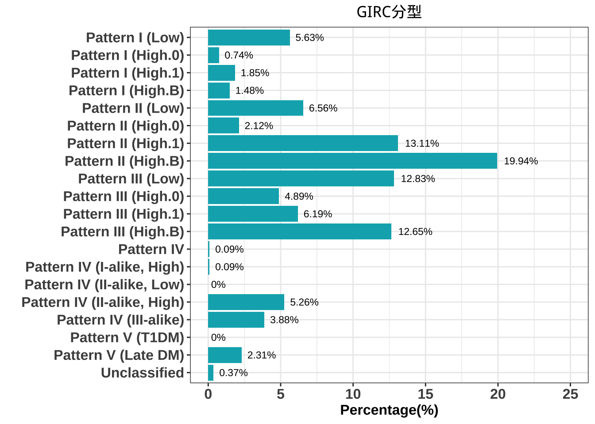

- Highlight
- 1 減重成效 - (單次療程)
- 2 Glucose Insulin Response Curve(GIRC)
- 3 Prediction(研究中)
- 4 Publication(1)
- 5 亞健康改善成效(2,4,6mo)
Chapter 2 Glucose Insulin Response Curve(GIRC)
診斷標準：

Pattern分佈：
| I | insulin_ac(SE) | insulin_pc1(SE) | insulin_pc2(SE) | N |
|---|---|---|---|---|
| Pattern I | 7.67 ± 0.42 | 93.04 ± 5.61 | 26.73 ± 0.82 | 105 |
| Pattern II | 11.46 ± 0.26 | 160.97 ± 4.61 | 96.84 ± 2.86 | 452 |
| Pattern III | 10.64 ± 0.28 | 105.98 ± 3.38 | 162.47 ± 5.32 | 396 |
| Pattern IV | 35.77 ± 1.18 | 287.24 ± 14.49 | 267.64 ± 17.42 | 101 |
| Pattern V | 7.66 ± 0.92 | 25.17 ± 1.86 | 20.21 ± 1.62 | 25 |
| Unclassified | NaN ± NA | NaN ± NA | NaN ± NA | 0 |
| NA | 17.55 ± 1.91 | 10.8 ± 2.69 | 188.9 ± 44.96 | 4 |

| I | insulin_ac(SE) | insulin_pc1(SE) | insulin_pc2(SE) | N |
|---|---|---|---|---|
| Pattern I (Low) | 5.49 ± 0.28 | 62.43 ± 1.9 | 26.9 ± 1.05 | 61 |
| Pattern I (High.0) | 15.43 ± 1.51 | 64.17 ± 4.95 | 26.14 ± 3.44 | 8 |
| Pattern I (High.1) | 6.74 ± 0.5 | 142.57 ± 12.28 | 26.13 ± 2.09 | 20 |
| Pattern I (High.B) | 13.28 ± 0.66 | 162.21 ± 18.53 | 27.11 ± 2.01 | 16 |
| Pattern II (Low) | 6.38 ± 0.26 | 71.69 ± 1.62 | 53.41 ± 1.31 | 71 |
| Pattern II (High.0) | 12.83 ± 0.41 | 72.16 ± 2.43 | 58.25 ± 3.08 | 23 |
| Pattern II (High.1) | 6.93 ± 0.17 | 143.47 ± 4.9 | 82.97 ± 3.57 | 142 |
| Pattern II (High.B) | 15.96 ± 0.29 | 211.28 ± 7.34 | 124.35 ± 4.73 | 216 |
| Pattern III (Low) | 5.81 ± 0.19 | 54.65 ± 1.56 | 90.85 ± 4.04 | 139 |
| Pattern III (High.0) | 14.28 ± 0.48 | 65.73 ± 2.39 | 114.4 ± 5.46 | 53 |
| Pattern III (High.1) | 7.02 ± 0.24 | 127.01 ± 4.6 | 196.39 ± 10.32 | 67 |
| Pattern III (High.B) | 15.91 ± 0.32 | 163.33 ± 6.13 | 237.15 ± 10.05 | 137 |
| Pattern IV | 28.4 ± NA | 81.1 ± NA | 36.7 ± NA | 1 |
| Pattern IV (I-alike, High) | 31 ± NA | 126 ± NA | 25 ± NA | 1 |
| Pattern IV (II-alike, Low) | NaN ± NA | NaN ± NA | NaN ± NA | 0 |
| Pattern IV (II-alike, High) | 36.47 ± 1.48 | 327.44 ± 19.33 | 216.98 ± 16.8 | 57 |
| Pattern IV (III-alike) | 35.12 ± 1.99 | 241.42 ± 19.85 | 347.67 ± 30.82 | 42 |
| Pattern V (T1DM) | NaN ± NA | NaN ± NA | NaN ± NA | 0 |
| Pattern V (Late DM) | 7.66 ± 0.92 | 25.17 ± 1.86 | 20.21 ± 1.62 | 25 |
| Unclassified | 17.55 ± 1.91 | 10.8 ± 2.69 | 188.9 ± 44.96 | 4 |
